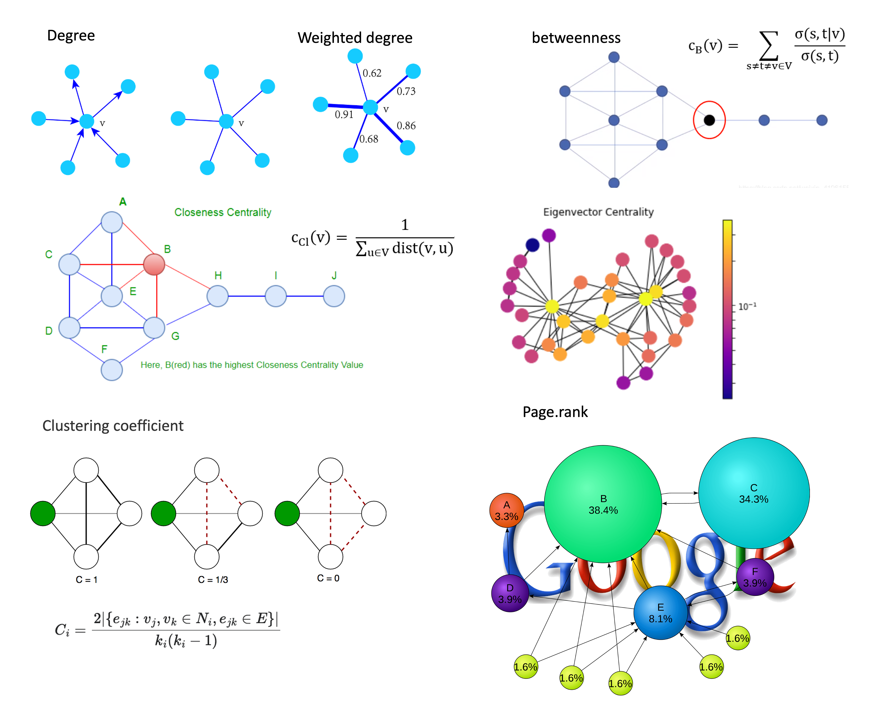
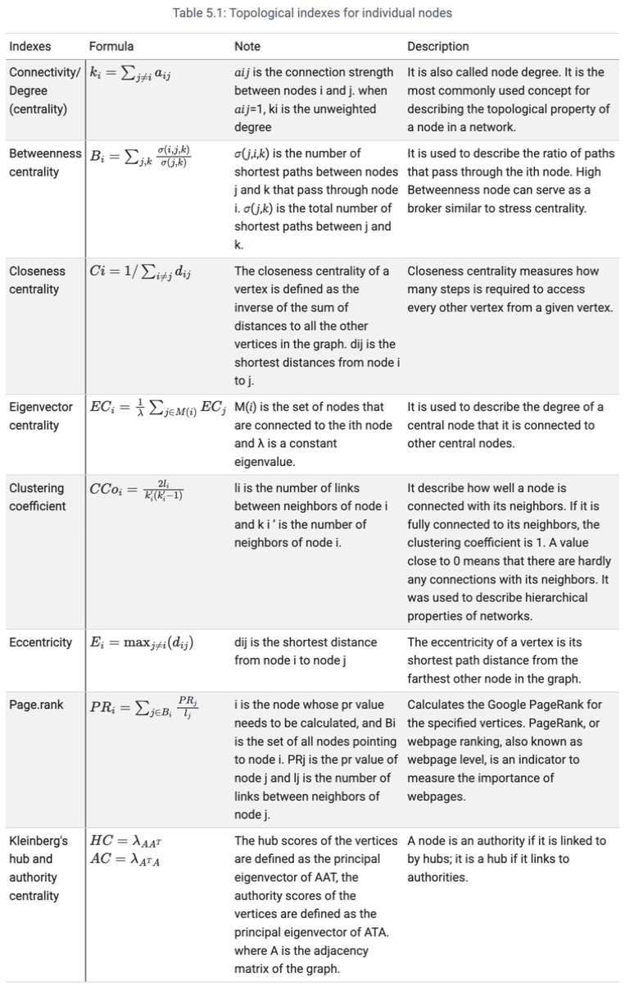
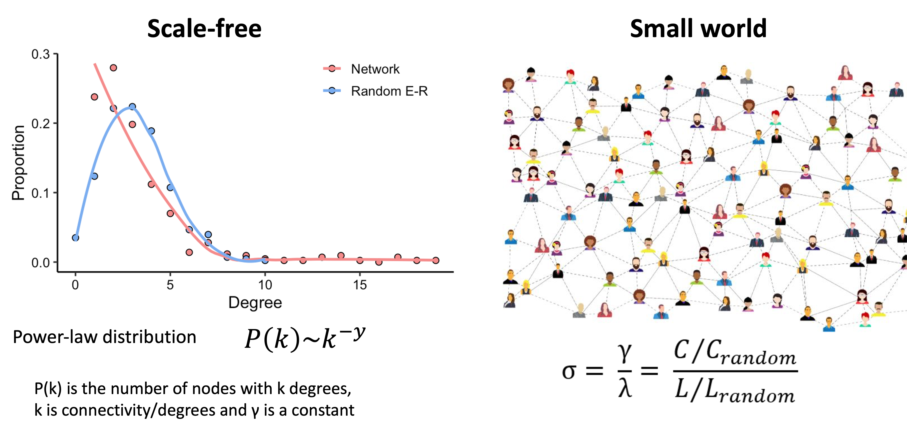
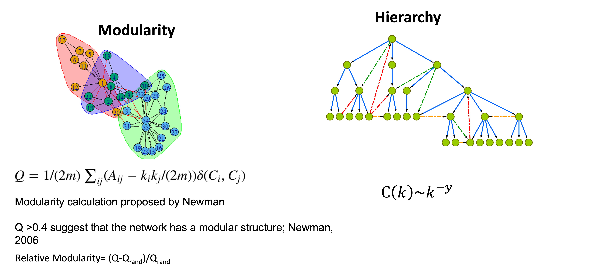
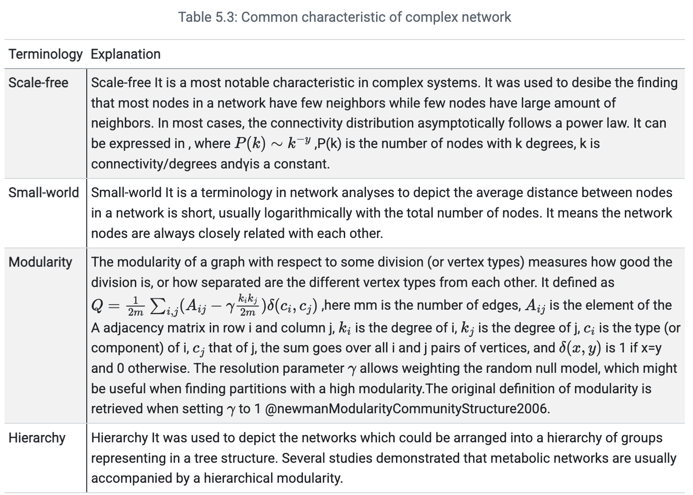

本文我们介绍网络的各种拓扑指标计算和分析。网络拓扑（Network Topology）是指网络中节点与边的连接模式所呈现的全局或局部结构特征。在生物组学研究中，拓扑分析能揭示分子互作网络的功能组织规律，是理解复杂生物系统的关键手段。
- 软件主页：https://github.com/Asa12138/MetaNet 大家可以帮忙在github上点点star⭐️，谢谢🙏
- 详细英文版教程：https://bookdown.org/Asa12138/metanet_book/
可以从 CRAN 安装稳定版：install.packages("MetaNet")
依赖包 pcutils和igraph（需提前安装），推荐配合 dplyr 进行数据操作。
|
|
拓扑指标
全局拓扑（Global Topology）描述网络整体连接特性，局部拓扑（Local Topology）聚焦单个节点/边的结构重要性，MetaNet可以对构建好的网络进行多种拓扑指标的计算和分析。
局部拓扑指标
-
Connectivity/Degree centrality
衡量节点直接连接数量的基础指标，反映节点的局部影响力。 -
Betweenness centrality
统计节点出现在所有最短路径中的频率，识别网络中的"桥梁"节点。 -
Closeness centrality
计算节点到其他所有节点的平均最短距离倒数，体现信息传播效率。 -
Eigenvector centrality
考虑邻居节点的重要性加权计算，适用于评估依赖高端连接的节点影响力。 -
Clustering coefficient
量化节点邻居间的连接紧密程度，揭示网络局部模块化特性。 -
Eccentricity
定义节点到网络中最远节点的距离，反映节点的全局位置特征。 -
PageRank
基于随机游走模型迭代计算的节点重要性，适用于有向网络（如基因调控网络）。 -
Kleinberg’s hub/authority centrality
双向评价节点价值：hub（指向重要节点）和authority（被重要节点指向）。
更细致的介绍可以看下表，来自MetaNet教程网页：
全局拓扑指标
-
Average connectivity/degree
网络中所有节点连接数的平均值，反映整体连接密度。 -
Average path length/Average geodesic distance
所有节点对之间最短路径的平均值，衡量网络信息传递效率。 -
Global efficiency/Geodesic efficiency
节点间最短路径倒数和的标准化值（0-1），值越高表示信息流动越高效。 -
Centralization of degree
节点度分布的集中程度（0-1），值越高说明网络越依赖少数枢纽节点。 -
Centralization of betweenness
节点介数中心性的方差，反映网络对"桥梁"节点的依赖程度。 -
Centralization of closeness
接近中心性的分布偏态，表征网络核心-边缘结构的强度。 -
Centralization of eigenvector centrality
特征向量中心性的异质性，评估高端连接节点的支配性。 -
Density
实际边数与最大可能边数的比值（0-1），描述网络的稀疏程度。 -
Average clustering coefficient
所有节点局部聚类系数的均值，量化网络模块化趋势。 -
Transitivity
三元闭包比例（三角形结构占比），反映网络局部聚集特性。 -
Natural connectivity
基于网络特征谱的鲁棒性指标，值越高表示网络越稳定。
一些潜在的生物网络分析应用场景：
| 指标类型 | 典型应用场景 | 计算复杂度 |
|---|---|---|
| Degree | 快速筛选高连接分子 | O(n) |
| Betweenness | 发现跨模块调控因子 | O(n²) |
| PageRank | 识别关键调控基因 | O(n log n) |
| 指标 | 典型生物学意义 | 示例场景 |
|---|---|---|
| Average path length | 代谢物信号传导速度 | 短路径=快速调控响应 |
| Centralization of degree | 关键基因的支配性 | 转录因子网络分析 |
| Transitivity | 蛋白复合体的形成倾向 | PPI网络功能模块检测 |
| Natural connectivity | 基因网络抗突变能力 | 疾病相关网络稳定性评估 |
MetaNet计算
MetaNet提供net_par()函数一键计算网络/节点/边三个层级的拓扑指标：
|
|
参数说明：
mode：计算范围"n"：网络级指标（如密度、平均路径长度）"v"：节点级指标（如度中心性、介数）"e"：边级指标（如边介数）"all"：全部指标（返回嵌套列表）
也可以通过c_net_index()计算并存储拓扑指标到网络中，便于后续分析和可视化：
|
|
|
|
将节点度中心性映射为可视化属性：
|
|
|
|
|
|

随机网络
随机网络（Random Network）是网络科学中的一类基础网络模型，其核心特征是网络连接遵循某种随机生成规则。Erdős-Rényi（ER）模型是最著名的代表：
-
定义：给定N个节点，每对节点以概率p独立连接
-
特性：
- 度分布呈泊松分布 $ P(k) \sim e^{-\lambda}\lambda^k/k! $
- 平均聚类系数：$C \approx p $
- 平均路径长度：$L \sim \ln(N) $
-
生物学意义：
- 作为"零模型"（null model）用于评估真实生物网络的显著性
- 帮助识别网络中的非随机结构（如模块、枢纽节点）
MetaNet提供两种随机网络生成方法用于网络分析对比：
- 单次随机网络生成
使用rand_net()基于Erdős-Rényi模型生成与目标网络（相同节点数和边数）的随机对照网络：
|
|

- 批量生成与统计比较
通过rand_net_par()生成多个随机网络并计算拓扑指标分布，再使用compare_rand()进行显著性比较：
|
|

复杂网络
在组学研究中构建的网络大多属于复杂网络，其核心特征包括无标度性、小世界性、模块化和层次性，具体定义如下所示：
  - 无标度性验证
使用fit_power()函数拟合网络的度分布幂律曲线：
|
|

- 小世界性量化
通过smallworldness()计算小世界指数σ：
$$ \sigma=\frac{C/C_{random}}{L/L_{random}} $$ 其中C和L分别表示实际网络的聚类系数和平均路径长度，$C_{random}$和$L_{random}$为随机网络对应值。当σ>1时，网络具有小世界特性。
|
|
网络的模块分析下一次介绍。
References
- Koutrouli M, Karatzas E, Paez-Espino D and Pavlopoulos GA (2020) A Guide to Conquer the Biological Network Era Using Graph Theory. Front. Bioeng. Biotechnol. 8:34. doi: 10.3389/fbioe.2020.00034
- Faust, K., and Raes, J. (2012). Microbial interactions: from networks to models. Nat. Rev. Microbiol. https://doi.org/10.1038/nrmicro2832.
- Y. Deng, Y. Jiang, Y. Yang, Z. He, et al., Molecular ecological network analyses. BMC bioinformatics (2012), doi:10.1186/1471-2105-13-113.